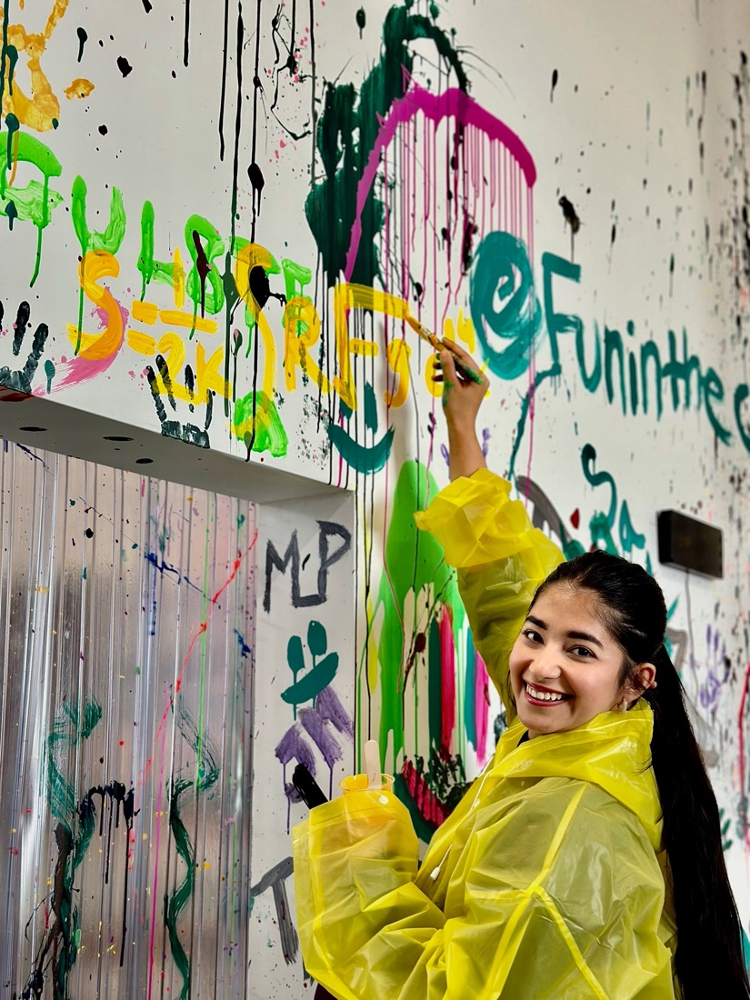
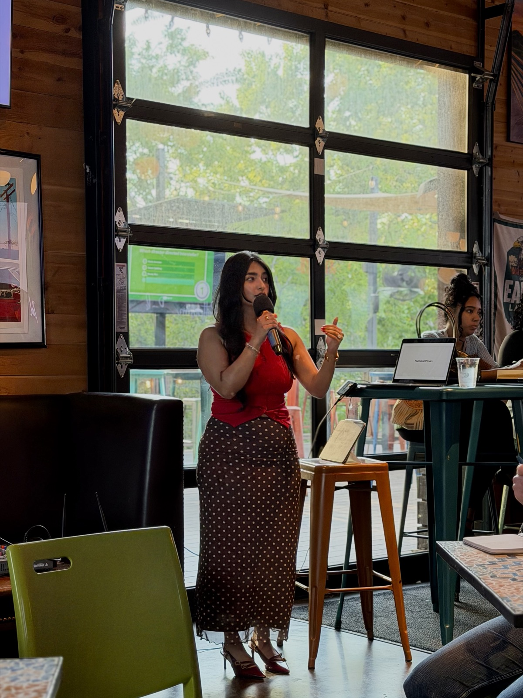

Theoretical physics · Science communication
Prachi
Garella.
Exploring the universe.
Sharing the questions.
I’m a physics PhD student at the University of Houston. I study matter under extreme conditions and share the ideas that make physics fascinating—through research, public talks, and The Knowmads Podcast.
Get in touch“One should always be cognizant of their words, actions and way of being.”
Explore my work01 Research
Matter at
the extremes.
My research explores the phase diagram of Quantum Chromodynamics (QCD): how strongly interacting matter behaves in extreme conditions, from the early universe to neutron stars.
I use holographic models and gauge/gravity duality to investigate its thermodynamics and phase structure.


02 Outreach & public talks
Physics belongs
in the conversation.
I believe that scientists, alongside conducting cutting-edge research, have a responsibility to communicate with the general public. I regularly give public talks at After5 Society, sharing ideas from physics and making research accessible to a wider audience.
Explore talks & outreach03 Conversations worth having
The Knowmads
Podcast
I co-host conversations with researchers about quantum chaos, black holes, string theory, gravity, and the big questions that keep us curious.
Explore the episodesBeyond the equations
A life of curiosity.
Travel, literature, fitness, fashion—and physics, of course. A few more corners of my world.
Keep the conversation going
Let’s connect.
For research collaborations, public talks, or a conversation about an interesting idea.